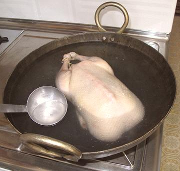

 It is necessary to scald a duck to open pores in the skin so the fat will escape during roasting. The skin will become tight and swolen during this process.
The method shown here is Chinese, lowering the duck into a wok (or in this case an Indian kadhai which is deeper) of boiling water and ladling the water over the exposed parts of the duck for about 5 minutes.
The French method, used through Europe and North America, is to put
the duck in the sink and pour boiling water over it. It's done this way
because the French don't have woks.